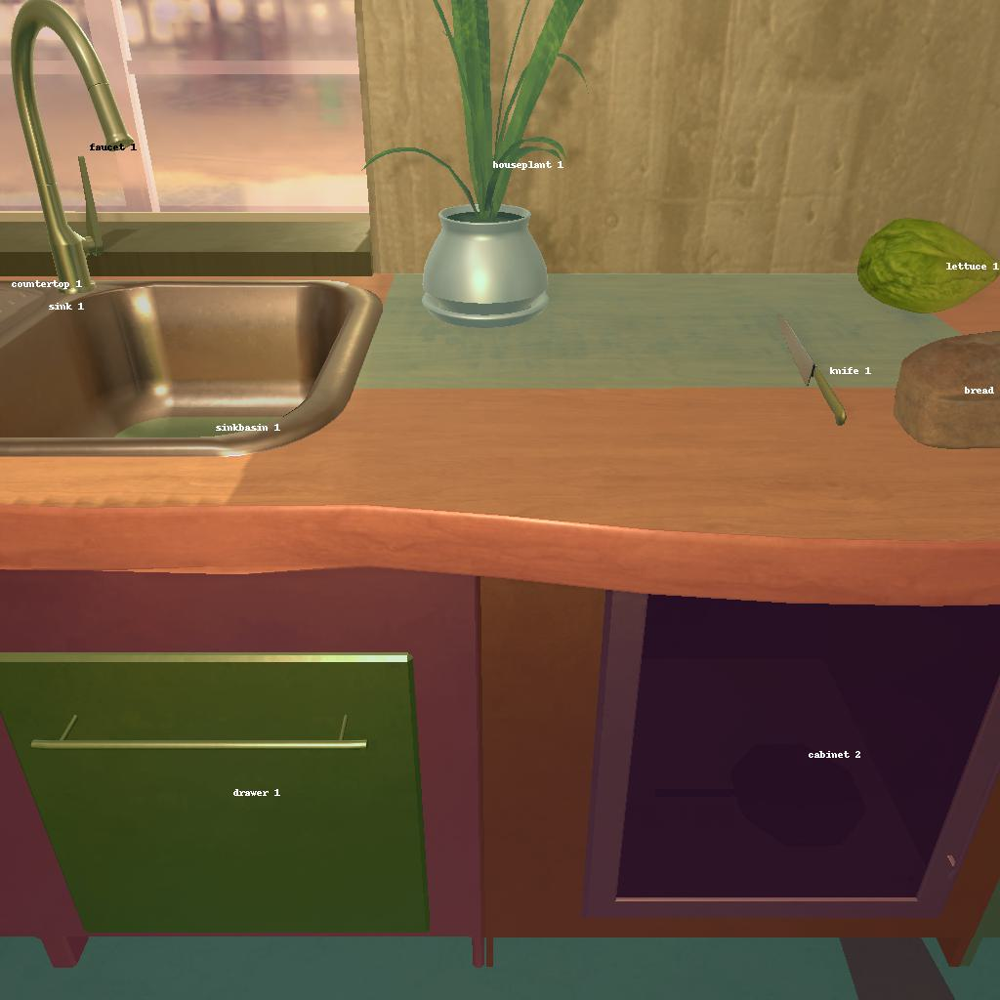

---------------------------------------------------------task: 26---------------------------------------------------------
--------------------------------------------------------------------------------------------------------------------------------------------------------------------
--------------------------------------------------------------------------------------------------------------------------------------------------------------------
Step:--------------------------------------------------------------------------4-------------------------------------------------------------------------------
----------------------------------------
VLM Prompt:
Image1:
**Instruction**
1. Analyze the provided image to identify all visible household objects, focusing on those relevant to the task description "find two kettle and put them in cabinet."
2. Use the analysis of the image and the task hint "The agent must find an object of the desired type, pick it up, find the correct location to place it, put it down there, then look for another object of the desired type, pick it up, return to previous location, and put it down there with the other object." to answer the question: what is the most reasonable action in the choices for the task description "find two kettle and put them in cabinet"?
4. Decide and write the answer using the template: The answer is: (i): , where i is the real number. If there is no desired object in the image, search every place based on **Initial Observation** to find the object. And if no one is exactly correct, choose a similar answer.
**Initial Observation**
You are in the middle of a room. Looking quickly around you, you can see countertop (1), coffeemachine (1), cabinet (1-4), drawer (1-8), sink (1), sinkbasin (1), garbagecan (1), fridge (1), microwave (1), dresser (1), sidetable (1)
**Answer Choices**
(1): go to coffeemachine 1
(2): go to cabinet 1
(3): go to drawer 1
(4): go to sink 1
(5): go to sinkbasin 1
(6): go to cabinet 3
(7): go to garbagecan 1
(8): go to cabinet 4
(9): go to drawer 2
(10): go to fridge 1
(11): go to microwave 1
(12): go to dresser 1
(13): go to sidetable 1
(14): go to drawer 3
(15): go to drawer 4
(16): go to drawer 5
(17): go to drawer 6
(18): go to drawer 7
(19): go to drawer 8
(20): open cabinet 2
(21): close cabinet 2
(22): examine cabinet 2
**Answer**
Let's think step by step by following the instructions.
----------------------------------------
----------------------------------------
Original Response:
First, we need to identify all visible household objects relevant to the task description "find two kettle and put them in cabinet." In the image provided, there are no kettles visible. Therefore, we need to search every place based on the Initial Observation to find the object.
The Initial Observation lists various locations where a kettle might be found, such as cabinets, drawers, and the countertop. The task description specifies that we need to find two kettles and put them in a cabinet. It is reasonable to start by searching the cabinets since kettles are often stored there.
Among the answer choices, there are several options to go to different cabinets (2, 6, 8) and one option to open a cabinet (20). Since we need to first find the kettles, the most reasonable action would be to open a cabinet to see if there is a kettle inside. The answer is: (20): open cabinet 2.
----------------------------------------
----------------------------------------
>>> Refine Original VLM Response and Get Pure Action: open cabinet 2
----------------------------------------
-----------------------------------------------------------------
Running time: 11.125633478164673 seconds
Total Money: 9.338000000000008
-----------------------------------------------------------------
-----------------------------------------------------------------
Text Observation:You open the cabinet 2. The cabinet 2 is open. In it, you see a houseplant 1, a faucet 1, a pan 1, a bread 1, a lettuce 1, and a knife 1.
-----------------------------------------------------------------
UNSUCCEED